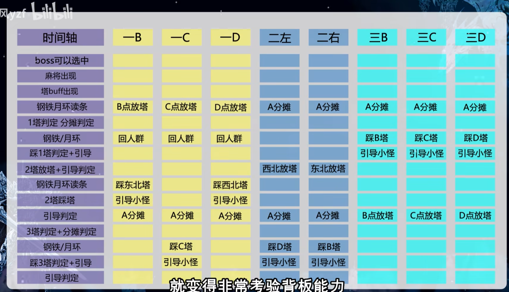

p2¶
一运¶
st组：A1B2（上、右） 第四次地裂与水波同时判定
p3¶

塔之后有aa，不要给刚玉
p4¶
盾姿
- 吃到buff开光心
- 接怪开铁壁伪装刚玉
- 保证自己是蓝线
- 星云撞球
- 幻象冲刚玉
- 只有幻象冲第一波点名的人需要记优先级
- 愤怒波动血仇
p4.5¶
- tlb剩3s光心
- 给20方极光、d3刚玉
- 关蹲姿
p5¶
- 开场aa刚玉
- 退避
- 一运后全减吃三连劈
- 二运结束后光心血仇，准备无敌死刑
一运¶

俯冲动画时才判定旋风，到位找法师哥，大圈去放点名，否则往斧头哥靠
二运¶

- 死宣雷炸了就穿，光圈雷炸了躲完旋风再穿
- 击退同时判定背对，面向一个脏东西左转或右转一个半标点
- 陨石结束后光心血仇
p6¶
减伤轴¶
| 机制 | 减伤 |
|---|---|
| 一冰火 | 被单点给大减，并给单点人刚玉，分摊大减和给自己刚玉 |
| 一远近 | 铁壁伪装刚玉，卡一下覆盖44分摊 |
| 二远近 | dk无敌，刚玉黑盾 |
| 二冰火 | 20+30+伪装，30需要卡一下时间 |
| 俯冲 | dk血仇+给自己刚玉 |
时间轴¶
| 机制 | 团减 | 单减 |
|---|---|---|
| 一冰火 | 被单点给大减，并给单点人刚玉，分摊大减和给自己刚玉 | |
| 分散毒点名 | ||
| 44分摊（3%检测） | 铁壁伪装，卡一下覆盖44分摊 | |
| 一远近 | 铁壁伪装刚玉 | |
| 一传：毒d传mt | ||
| 十字火 | 光心，血仇（黑龙） | 左分散右分摊 |
| 二传：mt传st | ||
| 44分摊（3%检测） | ||
| 二远近 | dk无敌，刚玉黑盾 | |
| 三传：st传d | ||
| 二冰火 | 20+30+伪装，30需要卡一下时间 | |
| 俯冲 | dk血仇 | 给自己刚玉 |
p7¶
身后地火中线（标点最外缘）->菱形花纹中心 三火炸了再移动
| 机制 | 单减 | 团减 | 仇恨 | 盾姿 |
|---|---|---|---|---|
| 地火+钢铁月环 | 四火炸 铁壁伪装 | 二仇 | ✅ | |
| 三aa | 二仇 | ✅ | ||
| 332分摊 | 读条过半刚玉星云 | 换为一仇 | ✅ | |
| 三aa | 一仇 | ✅ | ||
| 陨石+钢铁月环 | 血仇 | 换为二仇 | ❌ | |
| 三aa | 刚玉 | 二仇 | ❌ | |
| 地火+钢铁月环 | 换为一仇 | ✅ | ||
| 三aa | 一仇 | ✅ | ||
| 116 分摊，去背面 | 读条大半超火并给mt刚玉 | 换为二仇 | ❌ | |
| 三aa | 二仇 | ❌ | ||
| 陨石+钢铁月环 | 血仇光心 | 换为一仇 | ✅ | |
| 三aa | 刚玉 | 一仇 | ✅ | |
| 地火+钢铁月环 | 四火炸 铁壁伪装 | 换为二仇 | ❌ | |
| 三aa | 刚玉 | 二仇 | ❌ | |
| 116 分摊，去右边 | 开始读条星云，过半刚玉 | 换为一仇 | ✅ | |
| 三aa | 一仇 | ✅ | ||
| 狂暴 |